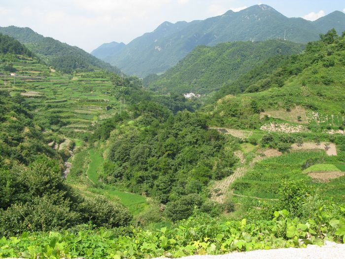

发信人: railfan (乐在骑中·善良的人?), 信区: outdoor
标 题: 一路向雁荡（已更新）(转载)
发信站: 饮水思源 (2010年08月10日18:28:45 星期二)
【 以下文字转载自 bicycle 讨论区 】
【 原文由 railfan 所发表 】
距南下撒野已有一个星期。
本想留给自己回味，有人说应该为以后的童鞋们留下点什么，索性在忘却之前随便写写，
文笔很差请多多包涵。
这次旅行的动机还很是简单。美好的两个月暑假，居然要关在闵行交大这个鸟拉屎的地方
，不免感到十分压抑。一直YY这浙南的美景和美人（小邪恶一下，嘿嘿，浙江姑娘都很漂
亮诶……），恰逢周末，便不顾板上老人的阻挠，决定翘课两天，来一次夏日的狂野走
……三天的时间，召集、选线、调车、借装备……
九点半去南体跑虫处签到酱油，慌乱中只睡上一个多小时。
周六凌晨，浙南之旅就这样开始了。
Day1 拖鞋门-金山-海盐-杭州-绍兴 261km
拖鞋门，杭州夜骑-wangjc,franklzx,boaz
screen.width - 200){this.width = screen.width - 200}">
夜间行车很爽，华丽地闯过闵浦二桥，沿沪杭公路匀速27kmh到奉贤、金山。虽然没有路灯
但是沪杭路况不错，仗着强光手电划破黑暗一路急行军，也不怕路上哪个下水井丢了盖，
哈哈。小顶风，我和包子轮换领骑以节省体力。wangjc的尾灯果然很炫目，耀眼得连前面
的路都看不清啦。
骑车断水是悲剧的。经过50k在金山找一家超市大肆补给一番之后，转至省道01直奔杭州城
。遗憾的是没有看到浙江界碑，稀里糊涂地踏入了水乡的领土。接着，骑啊骑，骑啊骑，
……，（省略50km）。
screen.width - 200){this.width = screen.width - 200}">
在海盐街边小摊吃了顿简单而丰盛的早餐。一路肠胃不给力加上爆胎，让我拖累大家一个
小时，以至一行四人正午骑行，变成四张烤鱼片，说声抱歉……
screen.width - 200){this.width = screen.width - 200}">
10:00，眼看进入杭州城，三位木有夜行经验的童鞋就轮番挂掉，只能让精神驱使着罢工的
大腿继续前行。赶路逐渐变成了煎熬。
午饭。看着疲惫驱赶了他们游玩的兴致，我也很失落。领队疲劳过度的包子执意回家（深
感歉意啊……让你领了那么久），只能打破原先的计划。正午的时间本应休息，变成了第
二轮自虐暴晒。
两点，杭州城站送别三人，继续自己的路。杭州很多地方在建设，很热很脏路况很差，没
留下一点好印象。直到跌跌撞撞到达西湖。
screen.width - 200){this.width = screen.width - 200}">
比想象的漂亮些。到里面的小岛转了一圈，享受炎炎夏日中难得的惬意。发现不应该穿印
着交大校徽的骑行服进来，引得众人围观。
screen.width - 200){this.width = screen.width - 200}">
screen.width - 200){this.width = screen.width - 200}">
screen.width - 200){this.width = screen.width - 200}">
screen.width - 200){this.width = screen.width - 200}">
screen.width - 200){this.width = screen.width - 200}">
为了找到钱塘江大桥，有幸绕湖半圈，山路上有雷峰塔、虎跑、六和塔还有很多景区，貌
似杭州游玩的精华都收入囊中。只是邂逅，有朝一日能进去看看就好了……推荐这条线路
，骑着变速菜车游杭州最方便。
screen.width - 200){this.width = screen.width - 200}">
大桥上风景很美，也遇到很多往城内骑行的车友，但是桥太窄，停车照相会挡住后面的人
……
下午的路程说实话有点虐，灼烧的太阳、起伏的丘陵路轮番试探着继续前行的信心。夏天
骑车水消耗的非常快（建议夏天骑车最好随身保证四瓶水，以防万一）。抵达萧山附近，
又被一个骑电瓶车逆行的欧巴桑调戏。眼看越来越近，我往右拐，她往右拐；我往左拐，
不动了，然后丫的脑袋被驴卷了一样，又向左拐过来……看到我摔倒，居然骑上车马上跑
路了。心想您老动作还真快哈……华丽丽的摔车，但还好只是几处擦伤（之后全部化脓，
我&%￥&%#%￥#）。
screen.width - 200){this.width = screen.width - 200}">
screen.width - 200){this.width = screen.width - 200}">
到路边吃几个桃子压压惊，继续无聊地数路边的公里桩。欢欣鼓舞看到了绍兴，定睛一看
只是绍兴县，硬着头皮继续走，天黑之前抵达目的地。
找不到旅馆，于是在市内乱转，不小心拐入一个胡同……梦中的水乡……
打算明早逛逛这里……
screen.width - 200){this.width = screen.width - 200}">
35块一晚的旅馆，还有热水澡可以洗，嗯~
累死了居然还要洗骑行服，没找到洗衣粉，只能用香皂意思意思……更何况根本不应该和
袜子放在一起洗……造成了第二天重口味的骑行服……
Day2 绍兴-上虞-嵊州-新昌-/天台山\-天台-临海-雁荡镇 162km（骑行）
五点出发，找到了昨晚的胡同。
小桥流水，朴实的居民，鸭子，大饼油条，久违的菜市场……
（我是菜市场控，嘎嘎嘎）
这是真的水乡，跟上海的那些不一样。
嗯，就这样爱上绍兴了……
screen.width - 200){this.width = screen.width - 200}">
screen.width - 200){this.width = screen.width - 200}">
screen.width - 200){this.width = screen.width - 200}">
screen.width - 200){this.width = screen.width - 200}">
screen.width - 200){this.width = screen.width - 200}">
screen.width - 200){this.width = screen.width - 200}">
于是在这里多逗留了一个多小时，经过了鲁迅故居、沈园，还有很多说不出名字的小地方
。反正以后还会再来的。
继续前行。上午八点到达上虞。继续南下。
又是太阳，这次清楚地认识到，汗如泉涌这个词不能随便用……
各种补水，基本按照每十公里两瓶的速度往肚里灌，喝水成了看风景、蹬车之外唯一的娱
乐项目。（重口味：小便居然还正常，水分都蒸发出去了……嗯，不听老人言是不对的，
谁叫你大夏天出来找死的……）
煎熬当中似乎走了神，忽略了“前方修路”的标语冲过障碍。
十几公里之后，当一个未贯通的隧道摆在眼前时……啊……
一台车和一张烤鱼片，被一个黑洞彻底鄙视……
扛车下陡坡，索性没有连人带车摔下去，心里默念做人要乖做人要乖以后不要无视路标…
…
screen.width - 200){this.width = screen.width - 200}">
screen.width - 200){this.width = screen.width - 200}">
screen.width - 200){this.width = screen.width - 200}">
翻山越岭，权当欣赏美景了。好久没见如此山水还是有些激动。
路上跟一个三轮车司机聊天很投机，不想骑的时候能得到支持，还是很开心。
screen.width - 200){this.width = screen.width - 200}">
11点，嵊州。貌似无意间经过了某同学家门口。早知道蹭一顿午饭了……这儿到新昌只有
十几公里，急着赶路，路上惊愕的发现自己顶着大太阳却不出汗，赶忙下车找一个树荫，
喝水休息。军训时搜刮来的补液盐是好东西，中暑之宝~
screen.width - 200){this.width = screen.width - 200}">
纪念一下第一次中暑~哇咔咔
烈日当头不能骑车，嗯，教训之一。
screen.width - 200){this.width = screen.width - 200}">
到达新昌，一顿丰盛的午饭，17块。老板很热情，留我在空调房里面睡了一觉。
screen.width - 200){this.width = screen.width - 200}">
巧克力、清凉油、所有的东西都化成液体……
1:00，从1600km界碑出发，开始挑战G104三十六道弯。之前看攻略只知道这个上坡很长，
不是非常陡。显然轻视了它的威力。
开始的小土丘很开心。上坡16下坡61，所以还是喜欢丘陵路，闯坡很开心地说~
screen.width - 200){this.width = screen.width - 200}">
然后就是25公里的连续上坡。很弱……基本上按照个位（9kmh）的速度慢慢爬，问题是，
不知道下面的上坡究竟有多长。太阳、断水、爬坡、烧蛋，最痛恨的四件事同时发生，接
近崩溃。嗯。谁叫你大夏天自己出来的。受着吧。
screen.width - 200){this.width = screen.width - 200}">
screen.width - 200){this.width = screen.width - 200}">
screen.width - 200){this.width = screen.width - 200}">
 screen.width - 200){this.width = screen.width - 200}">
果然不行了。索性把车扔在半山腰上，躺在路边的树下，睡觉。
醒来，继续爬，继续难受。省略一小时……
到达山顶，发现这里居然有个小镇，路边的杂货店里遇到一个读高三的mm在看家。聊天许
久。
继续前行，经过一系列的山口，终于看到了可怕的下坡，还有标语。
screen.width - 200){this.width = screen.width - 200}">
我爱台州！
screen.width - 200){this.width = screen.width - 200}">
就等着你呢……
可爱的标语~
screen.width - 200){this.width = screen.width - 200}">
screen.width - 200){this.width = screen.width - 200}">
这个更有爱！顿时对台州印象超好~ 冲下坡的时候居然被众人喝彩围观……囧……
下次还是穿迷彩吧……
10km路程，瞬间化为乌有。
下坡就是体验距离不见了的快感。风景很美但是不敢拍照。略。
别了，天台山！
screen.width - 200){this.width = screen.width - 200}">
screen.width - 200){this.width = screen.width - 200}">
screen.width - 200){this.width = screen.width - 200}">
原来济公云游于此。
screen.width - 200){this.width = screen.width - 200}">

因为要赶7:45临海的动车，放弃了剩下50公里的路程，买到客车票之后被告知客车太小
不能放自行车。跟工作人员纠结半小时无济于事。无助中去G104旁边拦顺路的卡车。
于是，继续被无情鄙视半小时。
有一位骑摩托的大叔看到我在悲剧，热情地过来询问，告诉我这里不适合拦车还有路况，
还有劝我找一辆出租车什么的，又把我带到了另一个容易拦下车的路口，甚是感动。
但是过了10min还是拦不来车。大叔又骑着摩托过来了。知道我现金不够，他居然从兜里
拿出一张红色的钞票，说咱们出来都不容易，先拿去用吧！但是看他的样子怎么也不算
富裕啊！我当然谢绝了他的好意，他就继续跟我一起拦车。几分钟后，有一辆一辆去往
临海的箱卡为我们停下了。大叔帮我和司机说情，主动递上烟给他们，而终于车主没多
犹豫，同意载我一程。
不知道该怎么感谢那位大叔！慌忙之中居然也没留下手机号码……
在车上，跟车上的三个人一起走弯弯曲曲的盘山路，聊刚才的大叔，聊我一路的故事……
但是木有留下任何照片……回想起我那洗成重口味的骑行服，很汗颜，跟他们贴的这么近，
一路上肯定给他们添了不少麻烦……哎……
19:00，到达临海，一个高楼林立的小城，比我想象的繁华太多。看来他们早就到卸货点
了，但是还没等我反应过来，司机师傅已经向临海站开去（刚上车的时候曾经提到火车
时间，原来他们帮我一直记着）。心里既难过又感激……继续前行有20公里吧（如果骑
过去，早就死在半路了，嗯，怪不得执意送我过来），因为他们也不熟悉新站，一起在
夜幕中绕了一大圈，终于从一个又一个胡同中找到了车站。卸车，一顿感谢之后，准备
把除了买车票剩下的钱全部给他们（多烧了40多公里油啊），三个人死活不肯收……
提前15分钟到站，目送着可爱的卡车消失在夜幕中……
台州人真好……
临海站，很偏，但毕竟是高铁站，设施既高端又简洁。
拆卸单车，把票叼在嘴里，进站。
screen.width - 200){this.width = screen.width - 200}">
在车上把座位让给别人，在过道上扶着单车直到雁荡山站。列车经常钻洞，耳膜很难受。
自行车上的旅程就这样结束了，想着一路上的纠结、崩溃和感动，心里打翻了五味瓶。
我的最后一次远行，收获很多，感触很多。
晚上九点多到达雁荡镇，摸黑赶路，去跟早已动车到达的洋子和青蛙会合。简单吃些东西，洗洗睡了。
三个大老爷们挤在两张拼在一起的床上，卧谈天下兴亡、鸡毛蒜皮还有些许情感夜话。
（to be continued）
Day3 雁荡 大龙湫
终于到达雁荡，看着不远处的群山很激动。两天的路没有白走。
在小镇上解决了早饭（推荐一下当地的鸡蛋雪菜馅饼，超好吃~），补给水源之后，继续
向大山深处进发。
screen.width - 200){this.width = screen.width - 200}">
screen.width - 200){this.width = screen.width - 200}">
screen.width - 200){this.width = screen.width - 200}">
screen.width - 200){this.width = screen.width - 200}">
screen.width - 200){this.width = screen.width - 200}">
虽有美景，又是爬坡……
后面懒得码字了，洋子和青蛙的帖子已经在前面，我就索性放些照片吧。大龙湫的瀑布很
漂亮，三个人在里面濯足戏水，忍住了跳下去游泳的冲动。
screen.width - 200){this.width = screen.width - 200}">
screen.width - 200){this.width = screen.width - 200}">
screen.width - 200){this.width = screen.width - 200}">
screen.width - 200){this.width = screen.width - 200}">

screen.width - 200){this.width = screen.width - 200}">
screen.width - 200){this.width = screen.width - 200}">
screen.width - 200){this.width = screen.width - 200}">
screen.width - 200){this.width = screen.width - 200}">
时间尚充裕，玩的不尽兴，恰好看到了一条不起眼的山路。决定野一下。早知上面如此
危险，如果没有两个人的陪伴，可能我永远没机会爬上这样的地方。
screen.width - 200){this.width = screen.width - 200}">
screen.width - 200){this.width = screen.width - 200}">
screen.width - 200){this.width = screen.width - 200}">
screen.width - 200){this.width = screen.width - 200}">
screen.width - 200){this.width = screen.width - 200}">
screen.width - 200){this.width = screen.width - 200}">
土路，乱石，攀岩。
虽然岩壁很陡，有些地方失足就直接摔死了，我一路抱怨，两人就耐烦地听着。
但真正爬山的时候，却不会害怕。
上山容易下山难。深刻地体会到了。
最后来一张合照吧，三个臭皮匠！
screen.width - 200){this.width = screen.width - 200}">
附上一点感悟+攻略：
又是远行，又是一个人的路。
路上的很多酸甜苦辣，说不出，道不明。
很多景、很多人、很多事，
来不及用快门留下，索性留给自己今后回味吧。
一路上，要感谢很多人。
帮助的，鼓励的，强势围观的，给我添麻烦的，还有我帮助过的人们。
当然还有哥们儿，能与你们相识，一同翻山越岭，是我的荣幸。
喜欢西湖、绍兴和热情的台州人，祖名豆浆，雁荡的大饼，大龙湫的泉水，
还有留在路途上的美好回忆。
路况：
沪杭：省道01，没有路灯，但是路况非常好，适合大灯夜骑，白天基本没树荫。
进入杭州市内的路在修整，非常差，可以考虑往北侧改道进城。
杭州-绍兴：有一条萧绍路，路况还好，有路灯。
绍兴-台州一路：G104，天台山之前路况很好，上虞-嵊州有一段路在修新线，不要往新线
走，会杯具！基本是丘陵地形适合刷AVS。天台山上的路也在修理，路况一般，三十六道弯
的爬坡虽不是很陡但绵延50km相当耗元气，有兴趣爬坡自虐的童鞋们可以去挑战一下新昌-
临海一线，景色还不错。
雁荡山景区：路况不错，某些地方是石板路比较颠，山上坡度灰常之大，青蛙和洋子骑车
爬到海拔1km的地方，这段路也适合自虐诶~
Tips:
1夏天骑车尽量避免大晴天，实在不行可以夜骑（注意事先查好路况，车灯要很亮、电池备
足）或者白天上午4:00-10:00，中午睡觉避暑，下午14:00之后继续。防止中暑。
2如果再不能避免太阳，请做好防暑工作，备好补液盐和清凉油、仁丹、酒精棉等，男生不
要逞能不涂防晒霜，特别注意脖颈、大腿和小腿后侧，这些容易被忽略的地方更容易被灼
伤，晒黑倒是很好，晒伤就很失败了。如果是单人出行，除了修车工具，还要带好雨衣、
风镜，至少一套备用衣裤、洗衣粉和必备的药品，越全越好，但还是轻装为主。
3补水很重要！！两天450公里不到，水补给却花了我大约150多块钱，一路喝了大约20种液
体，哈哈！后期基本每十公里补给一次，小便保持正常，可见这个蒸发器够给力啊！千万
不要脱水，适时搞些含糖饮料、盐汽水或者红牛也比较好。
4摔车之后不要不管伤口，我这次擦伤很轻但是有一次洗澡之后忘记消毒，于是化脓感染，
非常难堪的一个痂，手臂上貌似要留下几个月的伤疤了。带一瓶消毒的眼药水，时常记得
滴几下，小心灰尘，特别是雨骑尤其小心泥点，上次右眼感染就是这样来的。
5一定要好好洗衣服啊……记得带好洗衣粉……回程时两个wsn还想跟pp的动车乘务员留影
的，被我一句话给堵回来了……把妹要注意个人形象啊……
6分配好体能，找自己的节奏，不要硬挺。以赶路的心态对待旅行可不好，累的时候随性停
下来吧，身边有很多美景和小地方可以停下来看看，错过了可永远也找不回来啊。
就这些吧。希望能对大家有所帮助。
※ 修改内容:·railfan 于 08月10日18:24:03 修改本文·[FROM: 59.78.47.5]
--
※ 转载:·饮水思源 bbs.sjtu.edu.cn·[FROM: 59.78.47.5]
|